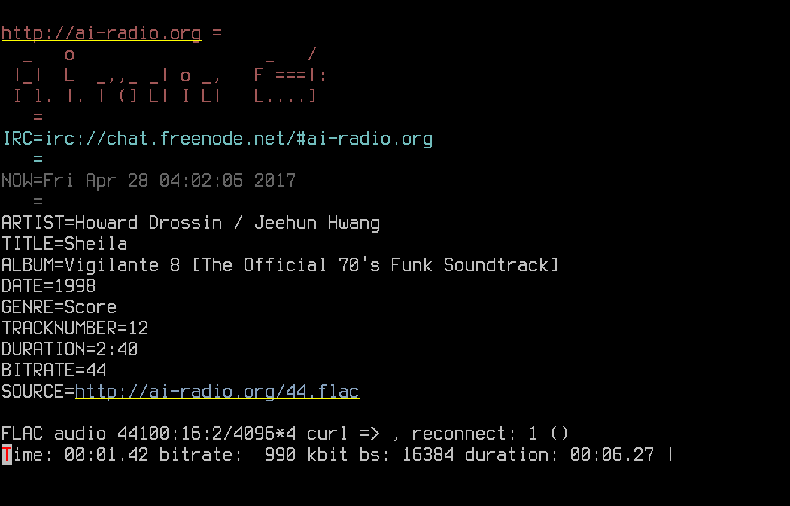

flac321
flac321 - command line oggFLAC chained stream lossless radio player ( like ogg123/mpg123 )
best lossless radio player for geeks )
Features
- display meta for every track
- play oggFLAC chained stream
- pure perl code
- console interface
- tiny and advanced
currently used simple tools ffmpeg | mpv | flac | aplay | paplay | wget | curl
for automate play audio stream
USAGE
flac321 [url|file]
FEATURES
play chained streams + display vorbis meta tags by tracks

OPTIONS
- --no-fancy disable fancy meta tags output
- --no-icy dont display icy headers
- --no-audio disable audio output, display meta only
- -6 / -4 ipv6 / ipv4 use only
- -d audio output device name
- -c write audio output to STDOUT
- -m write meta to file
- -F raw flac out
- - read from STDIN
USAGE EXAMPLES
flac321 [http://ai-radio.org/flac](http://ai-radio.org/flac)
DOWNLOAD & INSTALL
wget [https://raw.githubusercontent.com/hyphop/flac321/master/flac321](https://raw.githubusercontent.com/hyphop/flac321/master/flac321) || wget [http://ai-radio.org/get/flac321](http://ai-radio.org/get/flac321)
chmod 0755 flac321
./flac321
or
git clone [https://github.com/hyphop/flac321.git](https://github.com/hyphop/flac321.git)
cd flac321.git
./flac321
GET & RUN BY ONE LINE
wget [http://ai-radio.org/get/flac321](http://ai-radio.org/get/flac321) -O- | perl "" [http://ai-radio.org/flac](http://ai-radio.org/flac)
ALIASE
flac321 -> flac123
NOTE
flac321 writed for http://AI-Radio.org video game music radio oggFLAC streams test! play flac streams and display meta ok! sure u can listen any other radio stream too;)
LINKS
- https://github.com/hyphop/flac321.git
- http://ai-radio.org/chronos/2015-07-05-flac321-command-line-stream-radio-player
- http://ai-radio.org/streams/
- http://dir.xiph.org/by_format/Opus
AUTHOR
hyphop
Wed Jan 2 01:31:41 UTC 2019